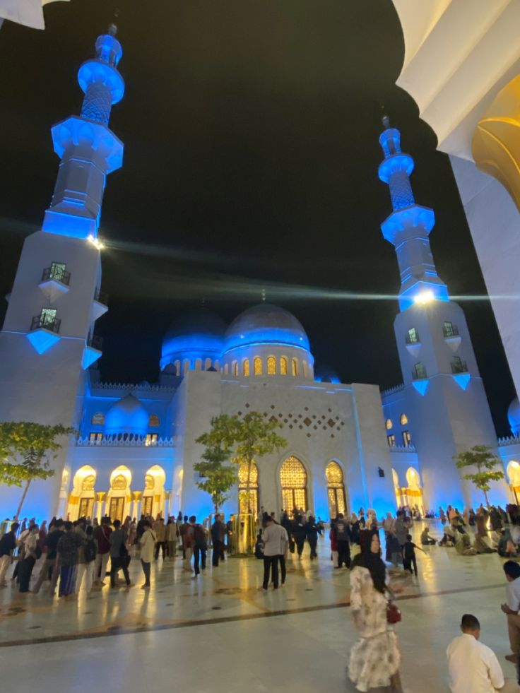
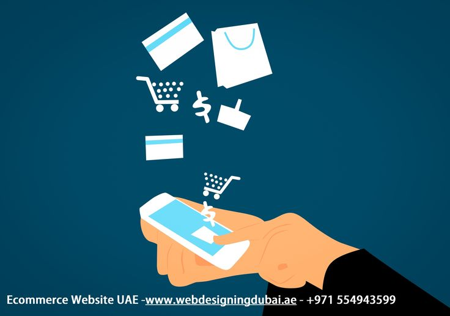
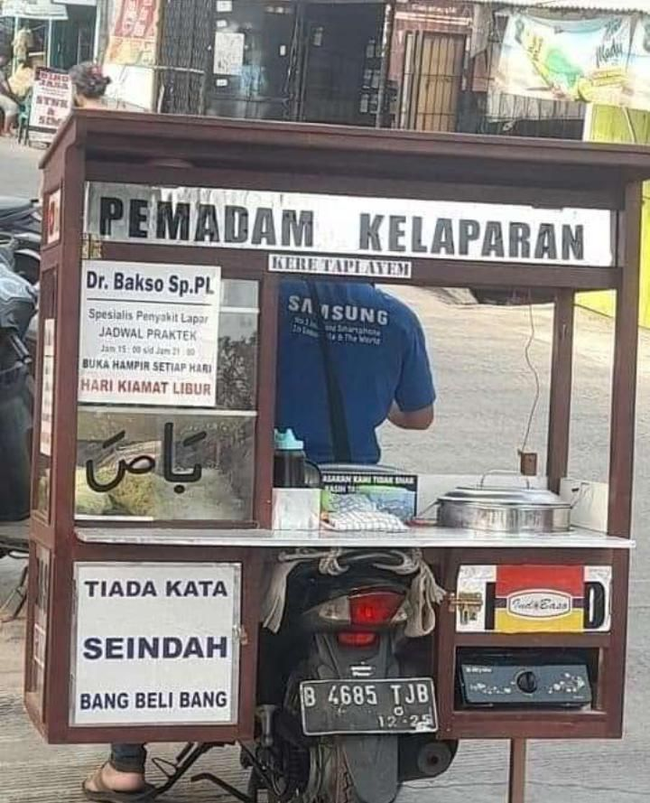

🌿 Pengertian Ekonomi Syariah
Ekonomi syariah adalah sistem ekonomi yang berlandaskan ajaran Islam dengan mengutamakan keadilan, kejujuran, transparansi, dan keberkahan dalam setiap aktivitas ekonomi.
🕌 Pengertian Gaya Hidup Halal
Gaya hidup halal adalah pola hidup yang sesuai dengan syariat Islam dalam berbagai aspek kehidupan seperti makanan, minuman, pakaian, transaksi keuangan, hiburan, hingga penggunaan teknologi digital.
📖 Dalil Al-Qur'an
يَا أَيُّهَا النَّاسُ كُلُوا مِمَّا فِي الْأَرْضِ حَلَالًا طَيِّبًا
"Wahai manusia! Makanlah dari apa yang ada di bumi yang halal dan baik."
(QS. Al-Baqarah: 168)
📜 Hadis Rasulullah SAW
"Sesungguhnya yang halal itu jelas dan yang haram itu jelas."
(HR. Bukhari dan Muslim)
✨ Prinsip Ekonomi Syariah
- Menghindari riba.
- Mengutamakan keadilan.
- Transparansi dalam transaksi.
- Tanggung jawab sosial.
- Mengutamakan keberkahan.
🎯 Tujuan Ekonomi Syariah
- Mewujudkan keadilan dalam transaksi ekonomi.
- Meningkatkan kesejahteraan masyarakat.
- Mengurangi kesenjangan sosial.
- Menciptakan keberkahan dalam aktivitas ekonomi.
- Menjaga harta sesuai syariat Islam.
📈 Manfaat Ekonomi Syariah
- Menciptakan transaksi yang adil.
- Mengurangi praktik riba.
- Meningkatkan kesejahteraan masyarakat.
- Mendorong kejujuran dalam bisnis.
- Menciptakan keberkahan dalam usaha.
💻 Penerapan di Era Digital
- Mobile Banking Syariah.
- Investasi Syariah Online.
- Pembayaran Zakat Digital.
- Marketplace Produk Halal.
- Promosi Usaha Halal melalui Media Sosial.
🖼️ Galeri Terbaru

Sumber: Pinterest

Sumber: Pinterest

Sumber: Pinterest
📚 Daftar Pustaka
- Al-Qur'an Surah Al-Baqarah Ayat 168.
- Hadis Riwayat Bukhari dan Muslim.
- Antonio, Muhammad Syafi'i. Bank Syariah: Dari Teori ke Praktik. Jakarta: Gema Insani.
- Karim, Adiwarman A. Ekonomi Mikro Islam.
- Kementerian Agama Republik Indonesia.
📌 Kesimpulan
Ekonomi syariah dan gaya hidup halal merupakan bagian penting dalam kehidupan umat Islam. Dengan adanya teknologi digital, masyarakat dapat lebih mudah mengakses layanan keuangan syariah, produk halal, dan berbagai aktivitas ekonomi yang sesuai dengan ajaran Islam.